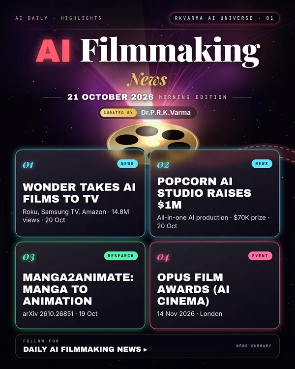

Latest updates · 21 October 2026
In the full issue →AI-native films are moving onto the living-room screen: Wonder Studios has signed a connected-TV distribution deal for its AI-made anthology, and a Dubai start-up has raised $1 million for an all-in-one AI production platform.
Research, industry & policy
- Wonder Studios signs connected-TV deal with Foundation Distribution, Televisual · 20 Oct 2026: AI-native films from online creators will stream as stand-alone titles on platforms such as Roku, Samsung TV and Amazon, starting with season 2 of Wonder's anthology Beyond the Loop, which has drawn 14.8M combined views.New today
- Popcorn AI Studio raises $1 million pre-seed, CinemaMix360 · 20 Oct 2026: The Dubai start-up combines scriptwriting, character creation, scene generation, voice, lip-sync and post-production in one workflow, with Arabic dialect support, and has announced an El Gouna-linked AI film competition with a $70,000 prize pool.New today
Journals & preprints
- Manga2Animate: An Agentic Framework for Faithful Manga Animation with Script and Storyboard Planning, arXiv 2610.26851 · 19 Oct 2026: Multi-agent system that plans a script and storyboard from manga pages, then animates them with consistent characters and style.New today
- Mise-en-Video: Fine-Grained 3D Control for Multi-Shot Video Generation, arXiv 2610.26801 · 19 Oct 2026: Lets creators stage actors and cameras in 3D across several shots of a generated video while keeping the shots consistent.New today
Conferences, workshops & events
- OPUS Film Awards, 14 Nov 2026 · London (London Film School): Awards for AI cinema.New today
Why it matters
Distribution, not generation, has been the missing link for AI cinema; TV placement and cheaper end-to-end tools widen who can make and sell films.

